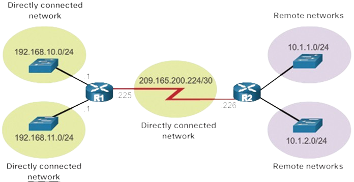

Le système EFS (Encrypting File System) de Microsoft est une fonctionnalité de chiffrement incluse dans
les systèmes d'exploitation Windows depuis Windows 2000.
Il permet aux utilisateurs de chiffrer les fichiers et les dossiers sur un disque NTFS pour protéger les
données sensibles contre l'accès non autorisé.
Configuration d'un domaine
Dans le cadre de ma formation, nous avons étudié les réseaux et les avantages apportés par un domaine
dans la centralisation des ressources d'une entreprise. Dans cet
objectif, un outil est extrêmement utile et commun : le rôle Active Directory des serveurs Microsoft.
Configuration du DHCP
Dans le cadre du système d'information d'une entreprise, l'administrateur a le choix dans l'attribution
des adresses IP, soit de le faire manuellement, soit dynamiquement.
La deuxième est largement préférable et plus répandue, en permettant l'automatisation de cette tâche.
Ainsi, cette attribution dynamique se fait au moyen du protocole
DHCP, qu'il convient de configurer et gérer.
Routage inter réseaux
Un enjeu dans les télécommunications est de faire intercommuniquer deux réseaux qui peuvent être
distants.

Configuration d'un serveur de sauvegardes
Afin d'assurer la pérennité des données d'une structure en cas d'éventuelles défaillances, une solution
de sauvegarde doit être mise en place,
qui consiste à faire une ou des copies de données d'une structure, généralement à intervalles réguliers,
sur un ou des supports de stockage.
Configuration d'un pare-feu
Configuration d'un pare-feu s'occupant de filtrer et router les paquets d'un réseau privé vers le réseau
public.
Configuration d'un serveur d'accès à distance
Afin d'assurer un accès à distance pour ses télétravailleurs sur son réseau local,
la société Belletable a décidé de commander la mise en place d'une solution d'accès
à distance pour son réseau.
Configuration d'un serveur d'administration des accès
La société Belletable souhaite mettre en place un serveur d'administration des accès basé sur Apache Guacamole,
une solution open-source d'accès à distance sans client.